The Kitchens
Gallery of Food and Where They Come From.
The stove, the condiments, the bowls — the architecture of a life maintained.
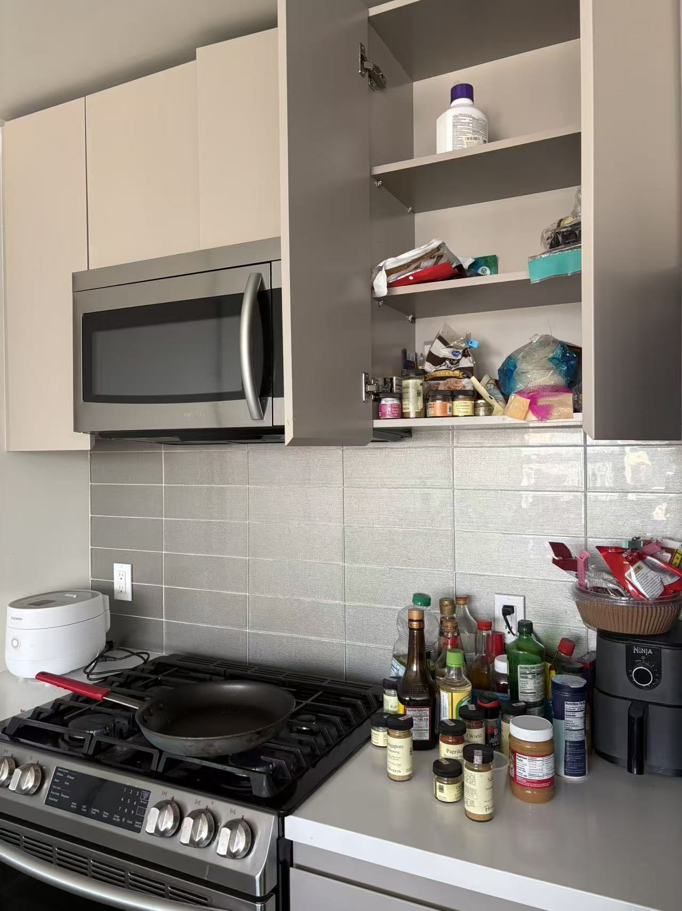
川
Los Angeles
la-01.jpg
la-01.jpg
Los Angeles · kitchen
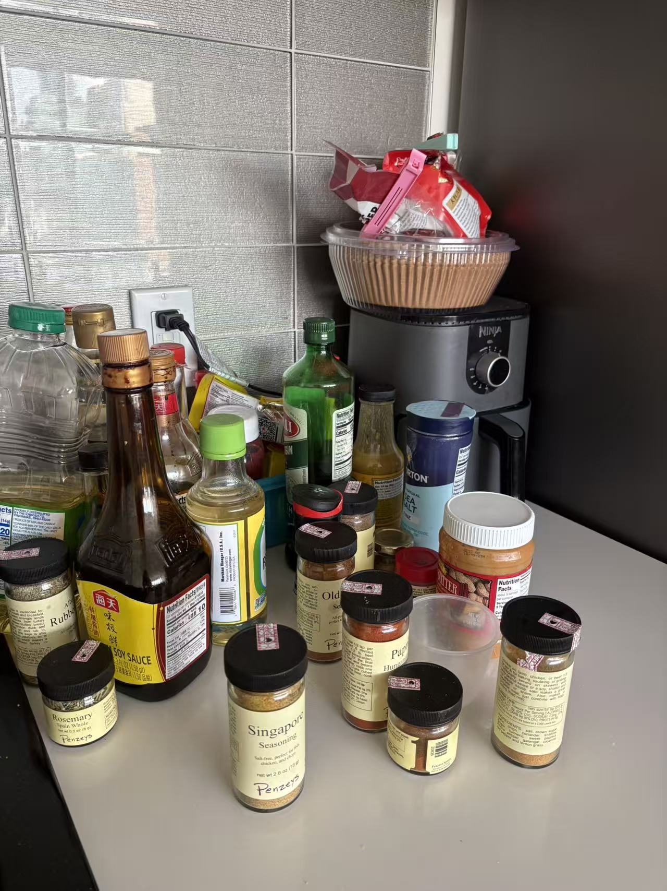
料
Los Angeles
la-02.jpg
la-02.jpg
Los Angeles · condiments
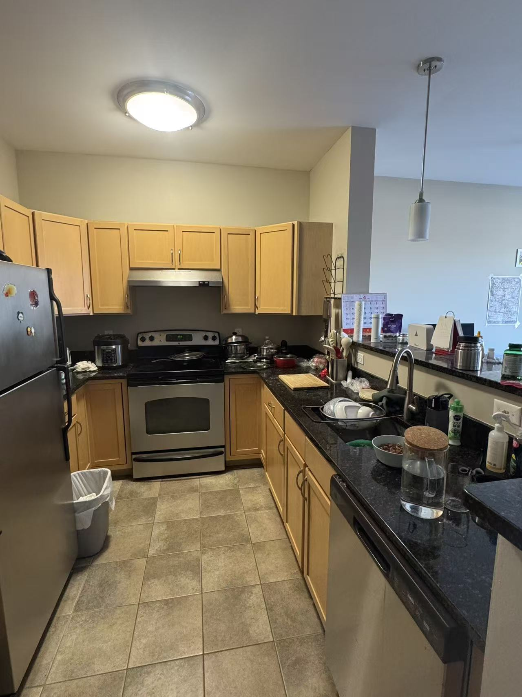
杭
Boston
bos-01.jpg
bos-01.jpg
Boston · kitchen
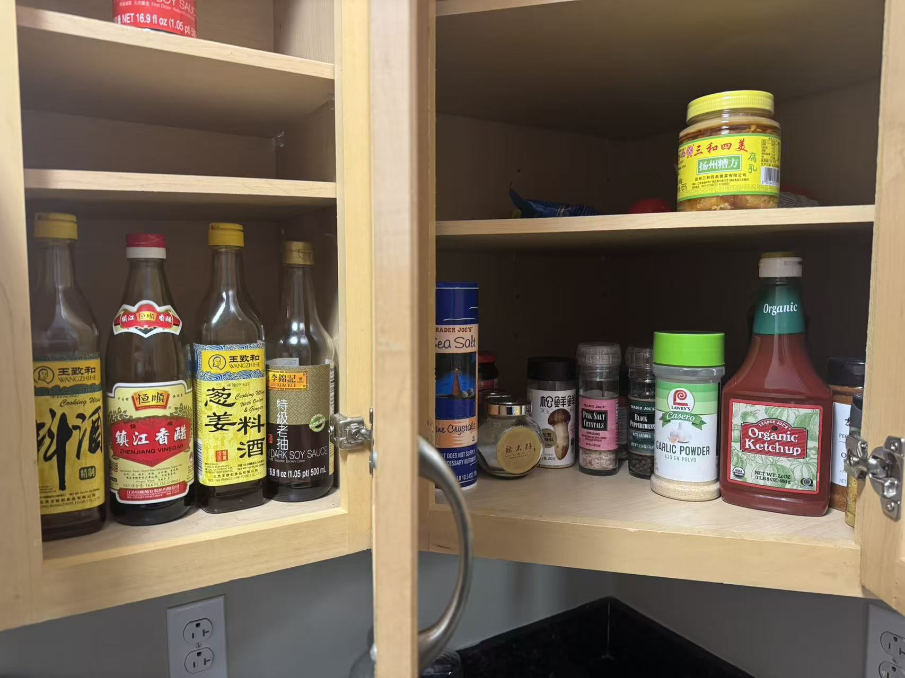
锅
Boston
bos-02.jpg
bos-02.jpg
Boston · condiments
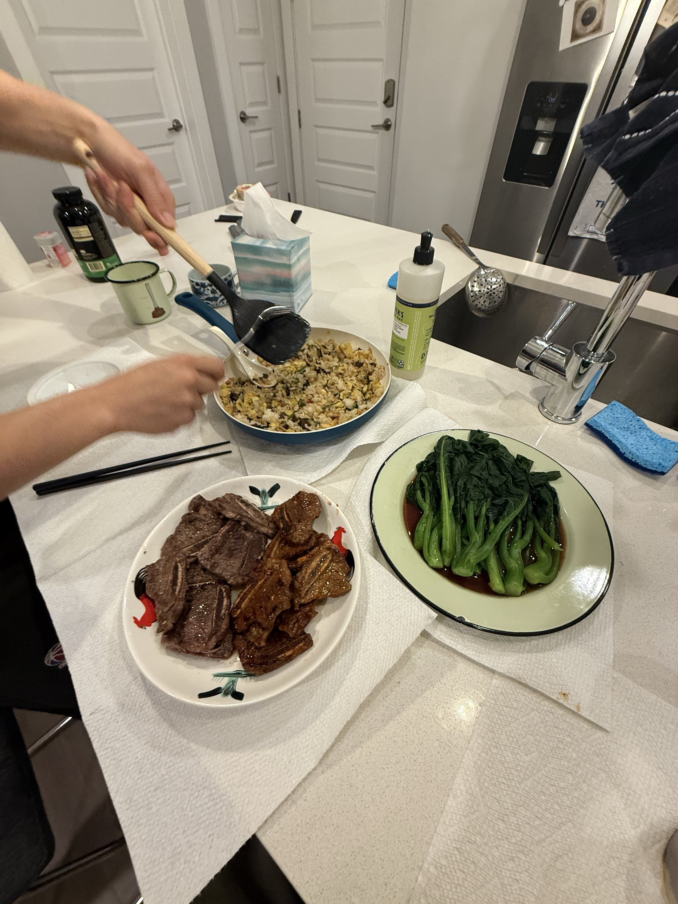
面
Atlanta
atl-01.jpg
atl-01.jpg
Atlanta · Home-cooked Food
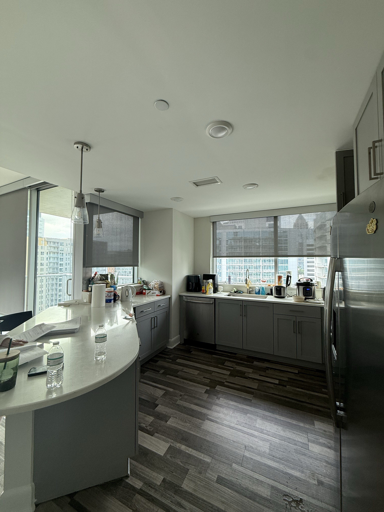
灶
Atlanta
atl-02.jpg
atl-02.jpg
Atlanta · stove
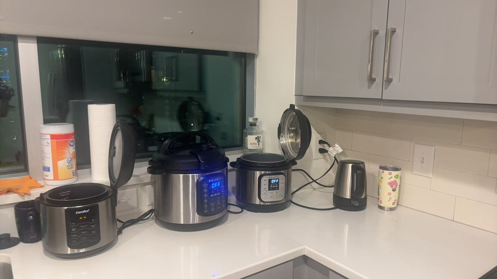
辣
Atlanta
atl-03.jpg
atl-03.jpg
Atlanta · condiments
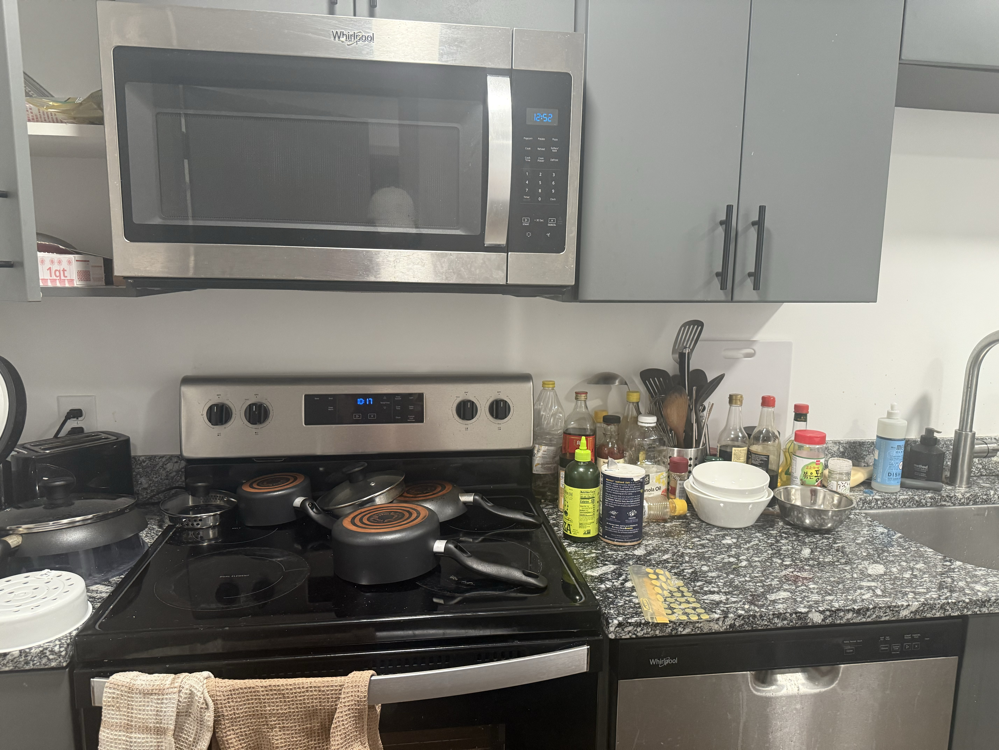
炖
Atlanta
atl-04.jpg
atl-04.jpg
Atlanta · kitchen
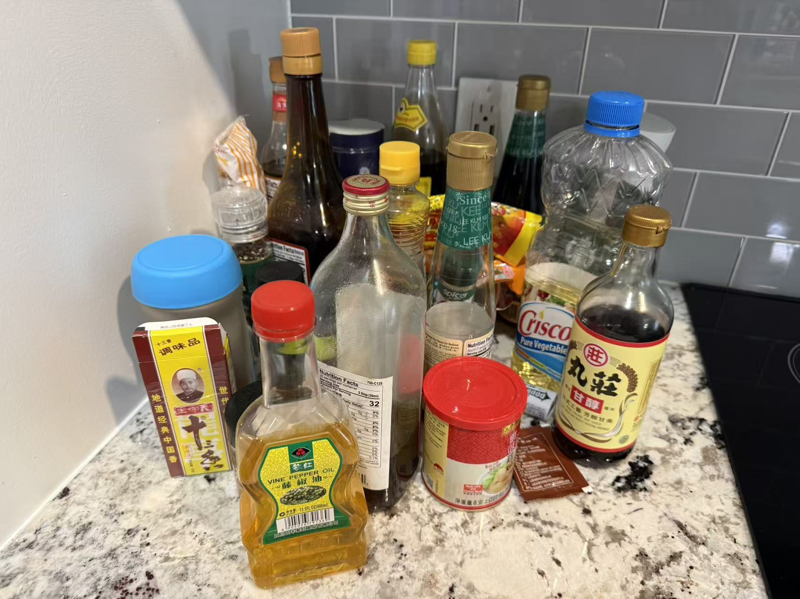
香
Atlanta
atl-05.jpg
atl-05.jpg
Atlanta · spice rack
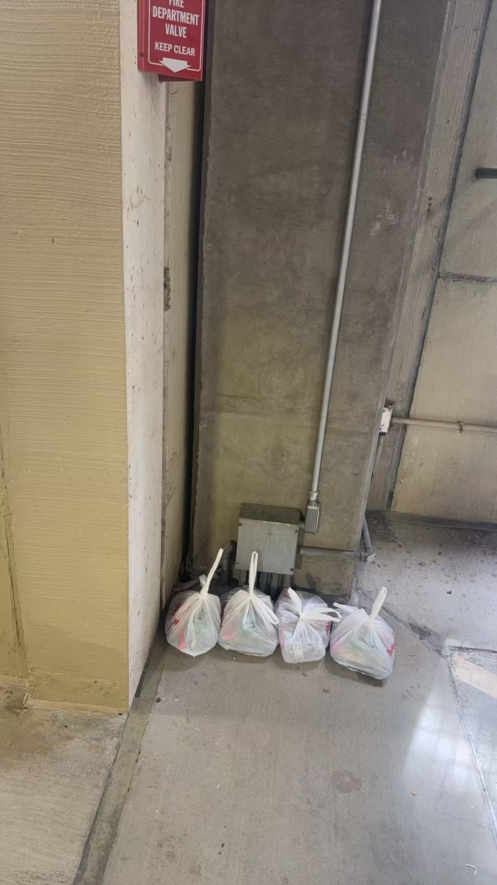
送
Atlanta
atl-06.jpg
atl-06.jpg
Atlanta · 南北通 delivery
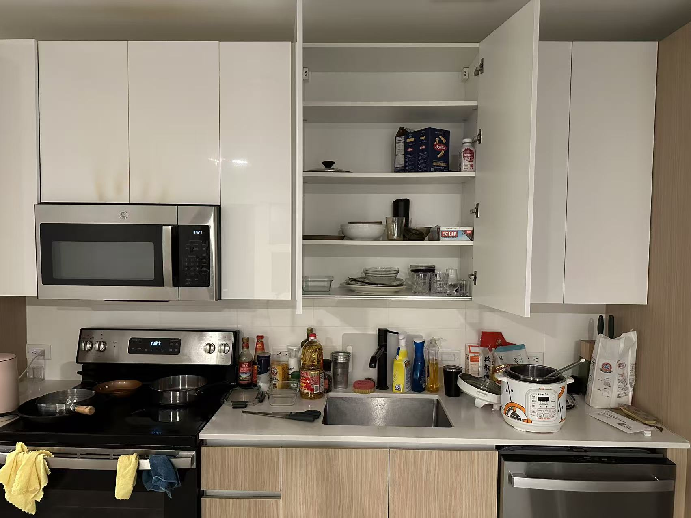
聚
Ithaca
ith-01.jpg
ith-01.jpg
Ithaca · kitchen
粉
Ithaca
ith-02.jpg
ith-02.jpg
Ithaca · cooked with care

凉
Charlottesville
cvl-01.jpg
cvl-01.jpg
Charlottesville · kitchen

储
Charlottesville
cvl-02.jpg
cvl-02.jpg
Charlottesville · pantry
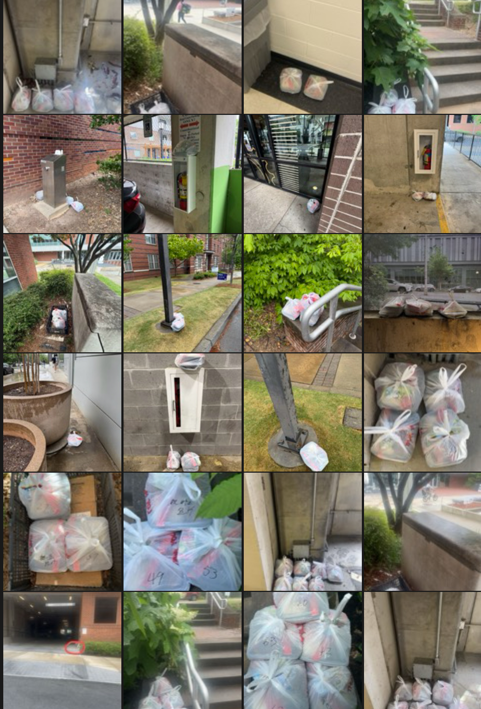
外
Delivery
delivery-01.jpg
delivery-01.jpg
南北通 · Georgia Tech delivery
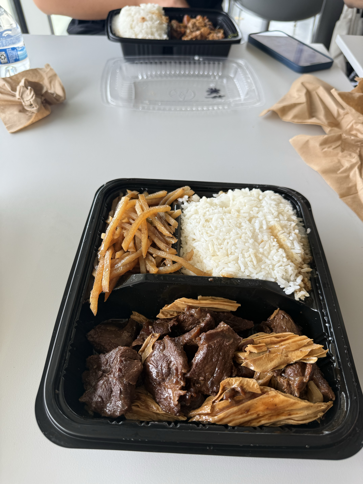
盒
Delivery
delivery-02.jpg
delivery-02.jpg
Delivery · unboxed
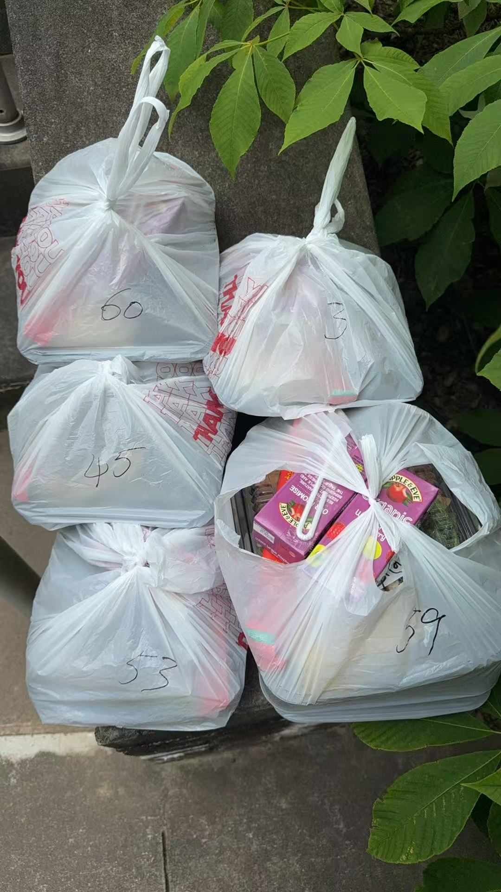
烫
杨国福
delivery-03.jpg
delivery-03.jpg
Delivery · dropped-off